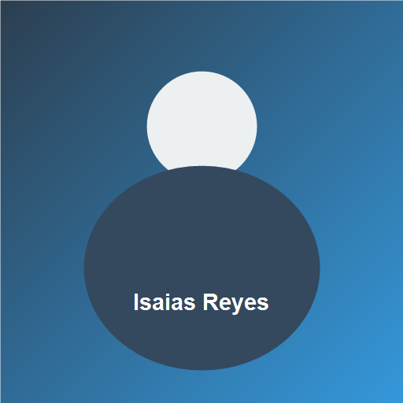

Mi biografía

Mi interés por la Tecnicatura en Desarrollo Web comenzó cuando me di cuenta de que la tecnología está presente en casi todo lo que hacemos a diario. Quería entender cómo se construyen las aplicaciones y los sitios web que uso todos los días, y dejar de ser solo un usuario para empezar a crear mis propias soluciones.
Elegí esta carrera porque combina mi curiosidad por la informática con una salida laboral concreta y en constante crecimiento. Cada práctica, como este laboratorio, me acerca un poco más al objetivo de convertirme en un desarrollador profesional capaz de diseñar páginas accesibles, semánticas y bien posicionadas en los buscadores.
Tecnologías y lenguajes que me interesa estudiar
- HTML5
- CSS
- JavaScript
- Python
- Git y GitHub